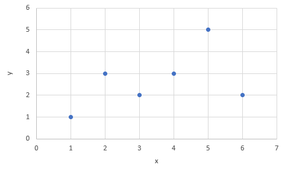
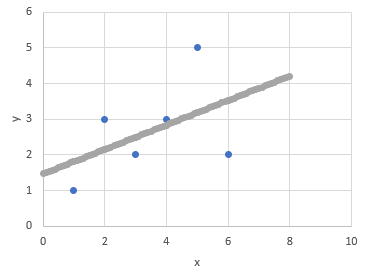
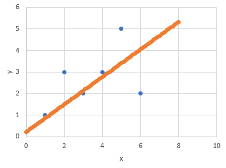

Other minor projects
Linear regression comparison
The objective of this exercise is to visualize and
compare the results of applying linear regression in two
different ways, using the same data. All the necessary calculations
were performed on a spreadsheet which can be found
here.
This example dataset
is composed of just one input variable "x" and one output
variable "y"
x = {1, 3, 2, 4, 6, 5}
y = {1, 2, 3, 3, 2, 5}
A dot graph of the data can be seen in Figure 1.
The model will be a straight line defined by the equation:
y = b0 + b1 * x
Where b0 and b1 are the coefficients we need to estimate.
The first method of calculating these coefficients will be
by using the following formulas:
b1 = ∑ (xi - mean(x)) * (yi - mean(y)) / ∑ (xi - mean(x))2
b0 = mean(y) - b1 * mean(x)
This gives us the following coefficients:
b1 = 0.342857143
b0 = 1.466666667
By using these in the previous equation, we can now
plot the line that forms the model. This graph is shown in Figure 2.
Finally, we can calculate the RMSE to get an estimate of the accuracy
of this model:
RMSE = 1.101225868
The second method of calculating the coefficients involves applying
gradient descent. Starting from b0 = 0.0 and b1 = 0.0, we can recalculate
them at every epoch by performing:
b0(next epoch) = b0 - learn rate * prediction error
b1(next epoch) = b1 - learn rate * prediction error
Using a learn rate of 0.01, the final values of the
coefficients after 24 epochs is:
b1 = 0.638197357
b0 = 0.217811901
This gives us another model for our data. The resulting line graph
can be seen in Figure 3. As we can see, this model is slightly different from
the previous one. The RMSE for this model is:
RMSE = 1.230204322
The higher error indicates that the first model was a bit more accurate,
even though both lines like a good approximation to the original dots.
We can presume that this is possibly due to the limited number of epochs
in the gradient descent. Ideally, we would want to continue the process
until there is no significant reduction in the prediction errors.

Fig.1

Fig.2

Fig.3
Dataset "Titanic"
The objective of this exercise is to visualize and compare the results of applying linear regression in two different ways, using the same data. All the necessary calculations were performed on a spreadsheet which can be found here. This example dataset is composed of just one input variable "x" and one output variable "y"
x = {1, 3, 2, 4, 6, 5}
y = {1, 2, 3, 3, 2, 5}
A dot graph of the data can be seen in Figure 1. The model will be a straight line defined by the equation:
y = b0 + b1 * x
Where b0 and b1 are the coefficients we need to estimate. The first method of calculating these coefficients will be by using the following formulas:
b1 = ∑ (xi - mean(x)) * (yi - mean(y)) / ∑ (xi - mean(x))2
b0 = mean(y) - b1 * mean(x)
This gives us the following coefficients:
b1 = 0.342857143
b0 = 1.466666667
By using these in the previous equation, we can now plot the line that forms the model. This graph is shown in Figure 2. Finally, we can calculate the RMSE to get an estimate of the accuracy of this model:
RMSE = 1.101225868
The second method of calculating the coefficients involves applying gradient descent. Starting from b0 = 0.0 and b1 = 0.0, we can recalculate them at every epoch by performing:
b0(next epoch) = b0 - learn rate * prediction error
b1(next epoch) = b1 - learn rate * prediction error
Using a learn rate of 0.01, the final values of the coefficients after 24 epochs is:
b1 = 0.638197357
b0 = 0.217811901
This gives us another model for our data. The resulting line graph can be seen in Figure 3. As we can see, this model is slightly different from the previous one. The RMSE for this model is:
RMSE = 1.230204322
The higher error indicates that the first model was a bit more accurate, even though both lines like a good approximation to the original dots. We can presume that this is possibly due to the limited number of epochs in the gradient descent. Ideally, we would want to continue the process until there is no significant reduction in the prediction errors.
Heart disease has a high prevalence. Approximately 3-5% of hospital admissions are related to these incidents. The costs are very high, reaching up to 2% of total health costs in developed countries. Building an effective disease management strategy requires the analysis of a large amount of data, the early detection of disease, assessment of severity and early prediction of adverse events. This will inhibit the progression of the disease, improve the quality of life of patients and reduce the associated medical costs.
Prediction of second cardiac arrest
Heart disease has a high prevalence. Approximately
3-5% of hospital admissions are related to
these incidents. The costs are very high, reaching up to 2%
of total health costs in developed countries.
Building an effective disease management strategy requires
the analysis of a large amount of data, the early detection of
disease, assessment of severity and early prediction of
adverse events. This will inhibit the progression of the disease,
improve the quality of life of patients and reduce the associated
medical costs.
Heart disease has a high prevalence. Approximately
3-5% of hospital admissions are related to
these incidents. The costs are very high, reaching up to 2%
of total health costs in developed countries.
Building an effective disease management strategy requires
the analysis of a large amount of data, the early detection of
disease, assessment of severity and early prediction of
adverse events. This will inhibit the progression of the disease,
improve the quality of life of patients and reduce the associated
medical costs.
Heart disease has a high prevalence. Approximately 3-5% of hospital admissions are related to these incidents. The costs are very high, reaching up to 2% of total health costs in developed countries. Building an effective disease management strategy requires the analysis of a large amount of data, the early detection of disease, assessment of severity and early prediction of adverse events. This will inhibit the progression of the disease, improve the quality of life of patients and reduce the associated medical costs.
Heart disease has a high prevalence. Approximately 3-5% of hospital admissions are related to these incidents. The costs are very high, reaching up to 2% of total health costs in developed countries. Building an effective disease management strategy requires the analysis of a large amount of data, the early detection of disease, assessment of severity and early prediction of adverse events. This will inhibit the progression of the disease, improve the quality of life of patients and reduce the associated medical costs.